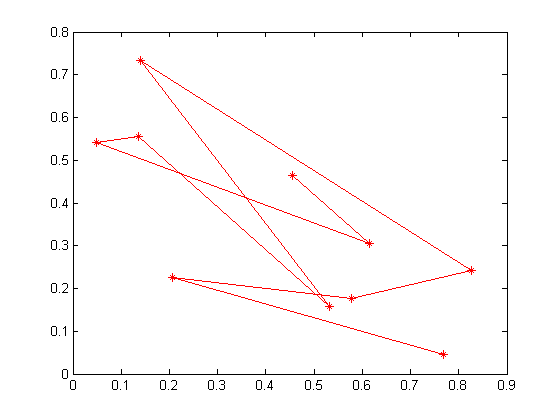

Contents
I. 清空环境变量及命令
clear all
clc
II. MATLAB编程习惯与风格
x_coordinate = rand(1,10); y_coordinate = rand(1,10); figure plot(x_coordinate,y_coordinate,'r-*') % %% III. MATLAB程序调试 % %% % % 1. Index must be a positive integer or logical. % A = [1 2 3 4 5]; % A(0) % A(3.5) % A(-2) % % %% % % 2. Undefined function or variable 'B'. % B % % %% % % 3. Inner matrix dimensions must agree. % B = [1 2 3]; % A * B % % %% % % 4. Function definitions are not permitted at the prompt or in scripts. % % function c = add(a,b) % % c = a + b; % % %% % % 5. Index out of bounds because numel(A)=5. % A(6) % % %% % % 6. In an assignment A(I) = B, the number of elements in B and I must be the same. % A(3) = B; % % %% % % 7. Expression or statement is incorrect--possibly unbalanced (, {, or [. % % mean(A(1:3) % % %% % % 8. Too many input arguments. % mean(A,1,2) % % %% % % 9. 循环体的调试 % a = 1:100; % b = []; % for i = 1:21 % index = 105 - 5*i; % b = [b a(index)]; % end % % %% % % 10. 查看、编辑MATLAB自带的工具箱函数 % edit mean % % edit newff % %% III. MATLAB内存优化配置 % feature memstats % % %% IV. 向量化编程 % %% % % 1. 及时清除不用的变量 % a = rand(10000); % b = rand(10000); % clear a % b = rand(10000); % % %% % % 2. 使用变量前，预分配内存空间 % clear all % clc % n = 30000; % tic; % for k = 1:n % a(k) = 1; % end % time = toc; % disp(['未预分配内存下动态赋值长为',num2str(n),'的数组时间是:',num2str(time),'秒！']) % % tic % b = zeros(1,n); % for k = 1:n % b(k) = 1; % end % time = toc; % disp(['预分配内存下动态赋值长为',num2str(n),'的数组时间是:',num2str(time),'秒！']) % % %%c % % 3. 选择恰当的数据类型 % clear all % clc % n = 300000; % a = 8; % b{1} = 8; % c.data = 8; % % tic % for k = 1:n; % a; % end % time = toc; % disp(['访问',num2str(n),'次double型数组时间是:',num2str(time),'秒！']) % % tic % for k = 1:n; % b{1}; % end % time = toc; % disp(['访问',num2str(n),'次cell型数组时间是:',num2str(time),'秒！']) % % tic % for k = 1:n; % c.data; % end % time = toc; % disp(['访问',num2str(n),'次struct型数组时间是:',num2str(time),'秒！']) % % %% % % 4. 按列优先循环 % clear all % clc % n = 1000; % a = rand(n); % tic % for i = 1:n % for j = 1:n % a(i,j); % end % end % toc % % for i = 1:n % for j = 1:n % a(j,i); % end % end % toc % % %% % % 5. 循环次数多的变量安排在内层 % clear all % clc % tic % a = 0; % for i = 1:1000 % for j = 50000 % a = a + 1; % end % end % toc % % tic % a = 0; % for i = 1:50000 % for j = 1:1000 % a = a + 1; % end % end % toc % % %% % % 6. 给一些函数“瘦身” % % edit mean % clear all % clc % a = rand(1,10000); % tic % b = mean(a) % toc % % tic % c = sum(a)/length(a) % toc % % %% V. 图像对象和句柄 % %% % % 1. 如何设置线条的属性呢？ % x = 0:0.01:2*pi; % y = sin(x); % h = plot(x,y); % grid on % get(h) % set(h,'linestyle',':','linewidth',5,'color','b') % % %% % % 2. 如何修改网格的间隔呢？ % set(gca,'xtick',0:0.5:7) % % %% % % 3. 如何设置图例的字体及大小呢？ % x = 0:0.01:2*pi; % y1 = sin(x); % y2 = cos(x); % plot(x,y1,'r') % hold on % plot(x,y2,'-.b') % h = legend('sin(x)','cos(x)'); % set(h,'fontsize',16,'color','k','edgecolor','r','textcolor','w') % % %% % % 4. 如何拆分图例呢？ % x = 0:0.01:2*pi; % y1 = sin(x); % y2 = cos(x); % h1 = plot(x,y1,'r'); % hold on % h2 = plot(x,y2,'-.b'); % ax1 = axes('position',get(gca,'position'),'visible','off'); % legend(ax1,h1,'sin(x)','location','northwest') % ax2 = axes('position',get(gca,'position'),'visible','off'); % legend(ax2,h2,'cos(x)','location','northeast')